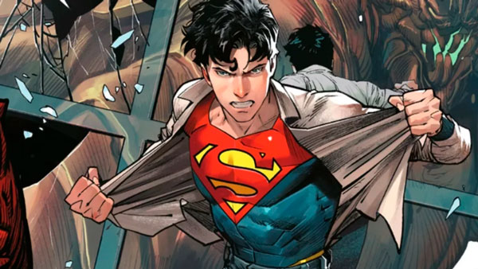

Superman fue creado por Jerry Siegel y Joe Shuster en 1938 y es uno de los personajes más famosos y populares en la cultura pop. Es conocido por su traje azul y rojo, su gran S en el pecho y su habilidad para volar y tener súper fuerza.

Origen de Superman
El origen de Superman cuenta la historia de un bebé que es enviado desde un planeta que está a punto de ser destruido a la Tierra, donde es adoptado por una pareja de granjeros. Con el tiempo, el joven Clark Kent descubre que tiene habilidades sobrehumanas y se convierte en el protector de Metrópolis como Superman.
Poderes y habilidades
Superman posee una variedad de habilidades sobrehumanas, incluyendo súper fuerza, velocidad, visión de rayos X, vuelo y una increíble resistencia. También es capaz de disparar rayos de calor con sus ojos y congelar objetos con su aliento.
Además de sus habilidades físicas, Superman también tiene un fuerte sentido de la justicia y la moralidad, lo que lo convierte en un defensor incansable de la verdad y la justicia.
- Volando a través del cielo
- Salvando el mundo de peligrosos villanos
- Rescatando a personas en peligro
- Luchando por la verdad y la justicia
Legado y adaptaciones
A lo largo de los años, Superman ha sido objeto de numerosas adaptaciones, incluyendo películas, programas de televisión, series de animación y cómics. Su impacto en la cultura popular es innegable, y ha sido una inspiración para generaciones de fans de todo el mundo.